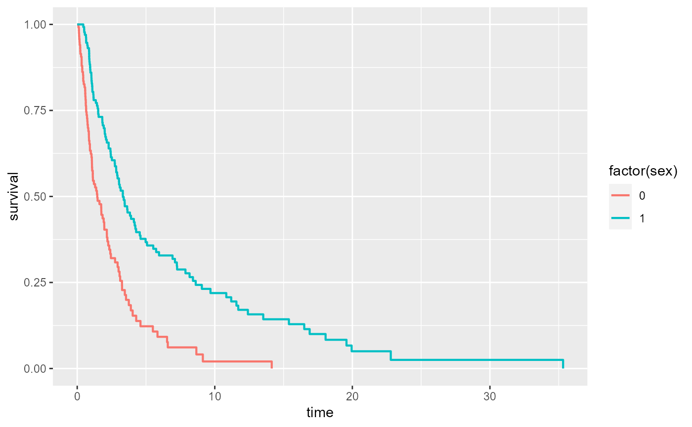

Add a Kaplan-Meier survival curve
geom_km( mapping = NULL, data = NULL, stat = "km", position = "identity", show.legend = NA, inherit.aes = TRUE, na.rm = TRUE, ... )
| mapping | Set of aesthetic mappings created by |
|---|---|
| data | The data to be displayed in this layer. There are three options: If A A |
| stat | The statistical transformation to use on the data for this layer, as a string. |
| position | Position adjustment, either as a string, or the result of a call to a position adjustment function. |
| show.legend | logical. Should this layer be included in the legends?
|
| inherit.aes | If |
| na.rm | If |
| ... | Other arguments passed on to |
geom_km understands the following aesthetics (required aesthetics
are in bold):
x The survival/censoring times. This is automatically mapped by stat_km
y The survival probability estimates. This is automatically mapped by stat_km
smallest level in sort order is assumed to be 0, with a warning
alpha
color
linetype
size
The default stat for this geom is stat_km see
that documentation for more options to control the underlying statistical transformation.
library(ggplot2) sex <- rbinom(250, 1, .5) df <- data.frame(time = exp(rnorm(250, mean = sex)), status = rbinom(250, 1, .75), sex = sex) ggplot(df, aes(time = time, status = status, color = factor(sex))) + geom_km() 